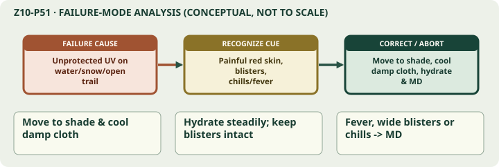

Z10-P51 · Wilderness medicine · New manuscript
Manage severe sunburn, solar blistering, and compound heat dehydration
Protect sun-damaged skin from infection and recognize systemic sunburn illness requiring medical care.
When it applies · Extended high-UV outdoor exposure on water, alpine snow, or open trails leading to painful red or blistering sunburn.
Equipment · Shade cover, cool damp cloths, safe drinking water, loose breathable clothing, and clean sterile dressings for broken blisters.

Actions
- Move out of direct sun immediately, apply cool damp clean cloths gently to tender skin, wear loose soft sun-blocking fabric over the area, and rehydrate steadily with safe potable water.[M07, E08, M17]
- Leave intact sunburn blisters unbroken and avoid petroleum jelly, butter, or topical benzocaine/home remedies that trap heat or trigger allergic skin reactions.[M07]
- Escalate to prompt clinical evaluation for widespread blistering, severe facial swelling, fever, chills, nausea, confusion, or signs of blister infection (pus, spreading red streaks).[M07, M06, T09]
Failure recognition · Continuing full-sun paddling with raw blistering shoulders until fever, dehydration, and secondary skin infection develop.[M07, M17]
Verify · Confirm UV exposure is blocked, hydration is maintained, intact blisters are protected, and systemic fever/chills are absent.[M07, M17]
Stop or change course · Extensive blistering, fever/chills, dizziness, or signs of heat exhaustion/stroke require stopping travel and seeking clinical care.[M07, T09]
Evidence and editorial notes
- E08 · CDC · About Heat and Your Health (current web edition)
- Section: Protect yourself from heat · Conditions: Outdoor activity in hot conditions
Support: Limit exertion in hot periods, take breaks in cooler places and monitor for illness.
Limitations: High humidity reduces sweat evaporation and raises heat strain at lower air temperatures. · Conflicting evidence: None; aligns with NWS-HEAT and NIOSH-H.
Editorial note: Anchors shade, pacing, and hot-weather shelter selection. · Specialist reviewer: Heat illness and emergency medicine
Primary source · checked 2026-11-24 - M06 · NIH / MedlinePlus · Wounds and Injuries (current web edition)
- Section: Minor Wound Cleaning, Protection, and Infection Red Flags · Conditions: Superficial cuts, scrapes, and abrasions with potable water available
Support: Rinse minor wounds thoroughly with clean potable water, cover with a clean sterile dressing, and monitor for worsening redness, warmth, swelling, pus, red streaks, or fever.
Limitations: Deep punctures, animal bites, retained foreign bodies, or heavily contaminated wounds require clinical evaluation and tetanus review. · Conflicting evidence: None; separates clean potable rinsing from harsh chemical wound scrubbing.
Editorial note: Anchors field wound hygiene and infection escalation cards. · Specialist reviewer: Wilderness medicine and wound care
Primary source · checked 2026-11-24 - M07 · NIH / MedlinePlus · Burns (current web edition)
- Section: Thermal Burn Cooling, Covering, and Severity Escalation · Conditions: Minor vs major thermal burns (flame, scald, contact)
Support: Cool minor superficial burns with cool (not icy) running water, remove constricting rings/clothing not stuck to skin, cover loosely with clean non-stick dressing, and seek emergency care for deep, large, facial, hand, foot, genital, joint, or airway burns.
Limitations: Never apply ice, butter, grease, or ointments to fresh burns, and do not pop intact blisters. · Conflicting evidence: None; aligns with ARC/ABA lay burn first aid.
Editorial note: Establishes burn-cooling limits and automatic clinical-escalation zones. · Specialist reviewer: Burn care and wilderness medicine
Primary source · checked 2026-11-24 - M17 · NIH / MedlinePlus · Dehydration (current web edition)
- Section: Dehydration Recognition, Oral Rehydration, and Red Flags · Conditions: Heat exertion, prolonged diarrhea, vomiting, or inadequate water intake
Support: Encourage small frequent sips of safe potable water or labeled oral rehydration solution in alert patients able to swallow; evacuate urgently for confusion, inability to keep fluids down, sunken eyes, or minimal dark urine.
Limitations: Severely dehydrated or altered patients cannot safely rehydrate by mouth alone. · Conflicting evidence: None; avoids unverified homemade salt-sugar ratio guesswork when labeled packets exist.
Editorial note: Links hydration monitoring to medical evacuation triggers. · Specialist reviewer: Wilderness medicine and internal medicine
Primary source · checked 2026-11-24 - T09 · CDC NIOSH · Heat-related Illnesses (current web edition)
- Section: Heat stroke > Symptoms and First aid · Conditions: Suspected heat stroke after exertion or heat exposure
Support: Confusion, slurred speech or loss of consciousness can indicate heat stroke. Call 911 and cool the person promptly.
Limitations: Exertional heat stroke can occur even in moderate ambient temperatures during heavy effort. · Conflicting evidence: None; aligns with T05.
Editorial note: Triggers immediate emergency call and cooling stop condition. · Specialist reviewer: Emergency and wilderness medicine
Primary source · checked 2026-11-24
Source lineage · NIH MedlinePlus Burns and CDC Heat Health; new manuscript · Classification · New manuscript.